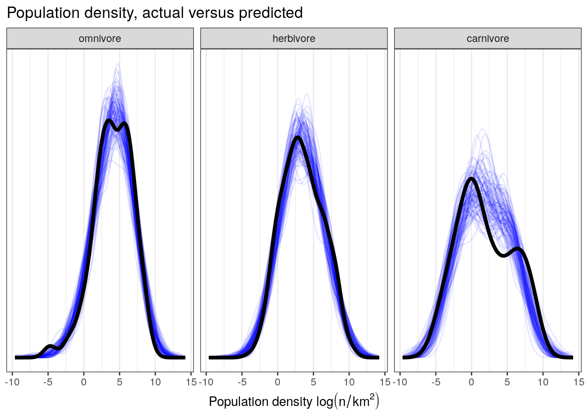
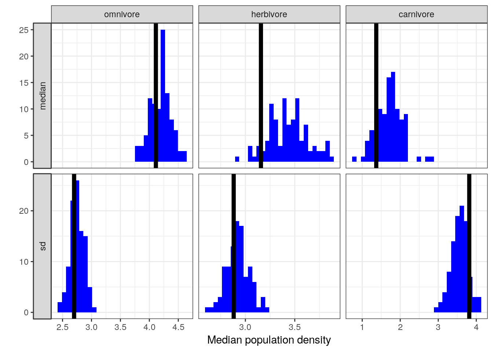

6 Interactions
6.1 Objectives
- Introduce interaction terms for regression models
- Demonstrate different “types” of interactions
- Cover strategies for interpreting statistical interactions
- Demonstrate ways of visualizing the effects of interaction terms
library(pacman)
p_load(tidyverse, here, janitor, purrr, viridis, brms, tidybayes, bayesplot,
modelr, forcats)
theme_set(theme_bw())6.2 Reading
- Chapter 7 “Interactions” from Statistical Rethinking by Richard McElreath.
- OPTIONAL Chapter 3 “Linear regression: the basics” from Data Analysis Using Regression and Multilevel/Hierarchical Models by Gelman and Hill.
6.3 Introduction
This lesson’s theme is “interaction effects – easy to compute, hard to explain.”
Conditioning is an extremely important principle in statistics. Our data are conditional on how they get into our sample. Posterior distributions are conditional on the data. All model-based inference is conditional on the model. Every inference in conditional on something, whether we notice it or not.
The power of statistical modeling comes from the conditioning machines we construct that allow probability to be conditional of aspects of each case. Our linear regression models are crude robots that allow each outcome \(y_{i}\) to be conditional on a set of predictors for each \(i\).
However, these linear models can fail to provide enough conditioning. Our previous models have assumed that each predictor has an independent association with the mean of the outcome. What if we want to allow the association to be conditional – that the association of one predictor with the mean of the outcome also depends on another predictor?
To model more complex conditionality, like the effect of one predictor which depends upon another predictor, we need what’s called an interaction. An interaction is a way to allow the posterior distributions of our parameters to be conditional on further aspects of the data. In practice, it is common for predictors with large effects also tend to have large interactions with other predictors (however, small effects do not preclude the possibility of large interactions). Including interactions is a way to allow a model to be fit differently to different subsets of the data.
Models with complex interactions are easy to fit to data, but they are considerably harder to understand. A linear interaction is the simplest kind of interaction and is built by extending the linear modeling strategy we’ve been following so far to parameters within the linear model itself. We’re going to be discussing these simple linear interactions in three contexts: specifying our model, interpreting our parameters, and visualizing them.
6.4 Data and inital model
This lesson continues are use of the PanTHERIA dataset. We’ve already built a multiple/multivariable regression model of population density as predicted by average species body mass and trophic level. While the model from our previous lesson was an improvement over simpler models using only body mass as an individual predictor of population density, there was still room for improvement – especially when describing variation among omnivorous species. In this exercise we’re going to cover specify how a linear interaction between body size and trophic level affects (mean) population density.
First, though, we need to import and clean up our data. We can also prepare our predictors by rescaling our continuous predictor body size and re-level trophic level at the same time.
pantheria <- read_tsv(here('data', 'PanTHERIA_1-0_WR05_Aug2008.txt'),
na = '-999.00') %>%
clean_names() %>%
mutate(mass_log = log(x5_1_adult_body_mass_g),
range_group_log = log(x22_1_home_range_km2),
range_indiv_log = log(x22_2_home_range_indiv_km2),
density_log = log(x21_1_population_density_n_km2),
activity_cycle = case_when(x1_1_activity_cycle == 1 ~ 'nocturnal',
x1_1_activity_cycle == 2 ~ 'mixed',
x1_1_activity_cycle == 3 ~ 'diurnal'),
trophic_level = case_when(x6_2_trophic_level == 1 ~ 'herbivore',
x6_2_trophic_level == 2 ~ 'omnivore',
x6_2_trophic_level == 3 ~ 'carnivore')) %>%
drop_na(mass_log, density_log, trophic_level) %>%
mutate(mass_stan = arm::rescale(mass_log), # center and scale
trophic_level = fct_infreq(trophic_level)) # reorder by frequency## Parsed with column specification:
## cols(
## .default = col_double(),
## MSW05_Order = col_character(),
## MSW05_Family = col_character(),
## MSW05_Genus = col_character(),
## MSW05_Species = col_character(),
## MSW05_Binomial = col_character(),
## References = col_character()
## )## See spec(...) for full column specifications.Let’s also write out the model we developed in the last lesson so that we have a place to start. \[ \begin{align} y_{i} &\sim \text{Normal}(\mu_{i}, \sigma) \\ \mu_{i} &= \alpha + \beta_{m} m_{i} + \beta_{h} h_{i} + \beta_{c} c_{i} \\ \alpha &\sim \text{Normal}(0, 10) \\ \beta_{m} &\sim \text{Normal}(-1, 5) \\ \beta_{h} &\sim \text{Normal}(0, 5) \\ \beta_{c} &\sim \text{Normal}(0, 5) \\ \sigma &\sim \text{Cauchy}^{+}(0, 5) \\ \end{align} \]
And, of course, we can fit this model using brm() like we did in the last lesson. This initial model will provide a useful comparison with the new model we will develop in this lesson.
m_1 <-
pantheria %>%
brm(data = .,
family = gaussian(),
formula = bf(density_log ~ 1 + mass_stan + trophic_level),
prior = c(prior(normal(0, 10), class = Intercept),
prior(normal(0, 5), class = b),
prior(normal(-1, 5), class = b, coef = mass_stan),
prior(cauchy(0, 5), class = sigma)),
iter = 2000,
warmup = 1000,
chains = 4,
cores = 4,
refresh = 0)6.5 How to specify an interaction
Specifying an interaction term is extremely easy. Let’s explore this using a very basic model where the mean of \(y\) is predicted by two variables, one continuous \(c\) and one binary \(b\). We can focus on the likelhood part of the model.
\[ \begin{align} y &\sim \text{Normal}(\mu_{i}, \sigma) \\ \mu_{i} &= \alpha + \beta_{c} c_{i} + \beta_{b} b_{i} \end{align} \]
In this case, we want to specify that the relationship between \(y\) and \(c\) also depends on \(b\). The relationship between \(y\) and \(c\) is measured by the coefficient \(\beta_{c}\). Following the same strategy by which we replace parameters like \(\mu\) with linear models, the most straightforward way to make \(\beta_{c}\) depend on \(b\) is to define the coefficient \(\beta_{c}\) as a linear model itself with \(b\) as a predictor!
\[ \begin{align} y_{i} &\sim \text{Normal}(\mu_{i}, \sigma) \\ \mu_{i} &= \alpha + \gamma_{c} c_{i} + \beta_{b} b_{i} \\ \gamma_{i} &= \beta_{c} + \beta_{cb} b_{i} \\ \end{align} \]
While this is the first time we’ve written out a model with two linear models, its structure is still the same as all other linear regression models we’ve written. The issue is in how we interpret this model.
The first line of this model defines our Gaussian likelihood as normal. The second line defines the linear model of \(\mu\) – again, something we’ve seen before. The linear function for \(\gamma\) defines the interaction between \(y\) and \(c\). This is a linear interaction effect because the equation \(\gamma\) is a linear model.
By defining the relationship between \(y\) and \(c\) this way, we are explicitly modeling the hypothesis that the slope between \(y\) and \(c\) is conditional on if \(b\) is 1 or 0. The parameter \(\beta_{cb}\) defines the strength of this dependency. If \(\beta_{cb}\) is 0, then this model reduces to the non-interaction model. If \(\beta_{cb} > 0\) then observations with \(b = 1\) have a greater slope between \(y\) and \(c\) than observations where \(b = 0\). Alternatively, if \(\beta_{cb} < 0\) then observations with \(b = 1\) have a lower slope between \(y\) and \(c\) than observations where \(b = 0\). When \(b = 0\), this model again reduces to the interaction no longer affects \(\gamma\).
6.5.1 Symmetry of interactions
The way we’ve specified our linear interaction effect actually obscures something very important about how interactions work: they are symmetrical! By defining that the relationship between \(y\) and \(c\) depends on \(b\) also means that the relationship between \(y\) and \(b\) also depends on \(c\). This fact becomes obvious with a little algebra. \[ \begin{align} \mu_{i} &= \alpha + \gamma_{c} c_{i} + \beta_{b} b_{i} \\ \gamma_{i} &= \beta_{c} + \beta_{cb} b_{i} \\ \mu_{i} &= \alpha + (\beta_{c} + \beta_{cb} b_{i}) c_{i} + \beta_{b} b_{i} \\ &= \alpha + \beta_{c} c_{i} + \beta_{cb} b_{i} c_{i} + \beta_{b} b_{i} \\ &= \alpha + \beta_{c} c_{i} + (\beta_{b} + \beta_{cb} c_{i}) b_{i} \\ \end{align} \]
Not only are interactions symmetrical, we could have defined \(\gamma\) to be the slope of \(b\) and a linear function of \(c\).
One of the intermediate steps of this little algebra exercise is actually the standard way of expressing an interaction between predictors: \[ \begin{align} y_{i} &\sim \text{Normal}(\mu_{i}, \sigma) \\ \mu_{i} &= \alpha + \beta_{c} c_{i} + \beta_{b} b_{i} + \beta_{cb} c_{i} b_{i}. \\ \end{align} \]
This standard form is useful for two reasons:
- it highlights the symmetry of the interaction,
- this is how interactions are expressed in R.
This symmetry is important because if either \(c\) or \(b\) change, this will affect of the other on mean \(y\) also changes. In contrast to our previous linear models, we no longer can manipulate our predictors independently. This symmetry is the reason interaction effects can be difficult to interpret, especially from tables of parameter estimates. As we are going to do shortly, interpreting interactions almost always requires plotting out results.
6.6 Fitting a model with an interaction
We’ve spent a lot of time describing an interaction effect and how we can increase the conditionality of our parameters, but we’ve yet to actually look at parameter estimates or discuss how to actually interpret interaction effects.
Armed with what we’ve covered, we can quickly update our initial model by adding in the linear interaction between body mass and trophic level. Remember, while trophic level begins as a multi-state factor, it is translated via dummy coding into multiple binary predictors with one of the states acting as the model’s intercept and the regression coefficients describing the difference in mean \(y\) between the default state and that predictors state. We’ve releveled trophic level so that the default state is omnivory and there are two binary predictors: herbivory and carnivory.
\[ \begin{align} y_{i} &\sim \text{Normal}(\mu_{i}, \sigma) \\ \mu_{i} &= \beta_{0} + \beta_{m} m_{i} + \beta_{h} h_{i} + \beta_{c} c_{i} + \beta_{mh} m_{i} h_{i} + \beta_{mc} m_{i} c_{i} \\ &= X_{i} \beta \\ \beta_{0} &\sim \text{Normal}(0, 10) \\ \beta_{m} &\sim \text{Normal}(-1, 5) \\ \beta_{h} &\sim \text{Normal}(0, 5) \\ \beta_{c} &\sim \text{Normal}(0, 5) \\ \beta_{mh} &\sim \text{Normal}(0, 5) \\ \beta_{mc} &\sim \text{Normal}(0, 5) \\ \sigma &\sim \text{Cauchy}^{+}(0, 5) \\ \end{align} \]
Luckily, there are some helpful R operators for specifying formulas. Interaction terms can be cleanly expressed in a few ways.
density_log ~ 1 + mass_stan + trophic_level + mass_stan:trophic_level
density_log ~ 1 + mass_stan * trophic_levelIn R formula syntax : represents the interaction between the relevant terms. While * also indicates an interaction, it also indicates the individual effects of the relevant forms because mass_stan * trophic_level expands to mass_stan + trophic_level + mass_stan:trophic_level. * is the compact way of indicating an interaction term.
Of course, you can also calculate the interaction between mass_stan and trophic_level by hand – it is multiplication after all. The hurdle here is that you’ll have to first do the dummy coding for trophic_level and then calculate the interaction for mass_stan and trophic_levelheribivore and the interaction with trophic_levelcanivore. I’ll leave this activity for interested parties who want to explore than on their own.
Now that we know how to specify an interaction using R formula syntax, we can implement and fit our model to the PanTHERIA dataset using brm().
m_2 <-
pantheria %>%
brm(data = .,
family = gaussian(),
formula = bf(density_log ~ 1 + mass_stan * trophic_level),
prior = c(prior(normal(0, 10), class = Intercept),
prior(normal(0, 5), class = b),
prior(normal(-1, 5), class = b, coef = mass_stan),
prior(cauchy(0, 5), class = sigma)),
iter = 2000,
warmup = 1000,
chains = 4,
cores = 4,
refresh = 0)## Compiling the C++ model## Start samplingprint(m_2)## Family: gaussian
## Links: mu = identity; sigma = identity
## Formula: density_log ~ 1 + mass_stan * trophic_level
## Data: . (Number of observations: 746)
## Samples: 4 chains, each with iter = 2000; warmup = 1000; thin = 1;
## total post-warmup samples = 4000
##
## Population-Level Effects:
## Estimate Est.Error l-95% CI u-95% CI
## Intercept 3.20 0.11 3.00 3.40
## mass_stan -4.74 0.22 -5.15 -4.33
## trophic_levelherbivore 1.22 0.15 0.92 1.52
## trophic_levelcarnivore -1.38 0.21 -1.79 -0.96
## mass_stan:trophic_levelherbivore -0.14 0.30 -0.74 0.47
## mass_stan:trophic_levelcarnivore -1.16 0.40 -1.95 -0.36
## Eff.Sample Rhat
## Intercept 3700 1.00
## mass_stan 2433 1.00
## trophic_levelherbivore 4107 1.00
## trophic_levelcarnivore 4476 1.00
## mass_stan:trophic_levelherbivore 2870 1.00
## mass_stan:trophic_levelcarnivore 3461 1.00
##
## Family Specific Parameters:
## Estimate Est.Error l-95% CI u-95% CI Eff.Sample Rhat
## sigma 1.79 0.05 1.70 1.89 4825 1.00
##
## Samples were drawn using sampling(NUTS). For each parameter, Eff.Sample
## is a crude measure of effective sample size, and Rhat is the potential
## scale reduction factor on split chains (at convergence, Rhat = 1).6.7 Interpreting our model
But how do we interpret these parameters?
Statistical Rethinking outlines two reasons why looking at a table of posterior estimates is a bad idea.
- Adding an interaction to a model changes the meaning of the parameters. The “main effect” coefficient of the predictor in an interaction model no longer means the same thing as the variable with the same name in a model without an interaction. Their posterior distributions are not directly comparable.
Interactions are tricky because this extra conditioning means that our normal interpretation of regression coefficients (expected change in \(y\) per unit change in that predictor, holding all others constant) is no longer valid. If we manipulate the value of one predictor in an interaction, multiple parameters are involved and not that single coefficient.
- Tables make it difficult to incorporate uncertainty into our thinking – we see a series individual numbers instead of the entire spread of numbers. This difficulty is exacerbated by the covariance between parameters being absent from our summary table, and when the effect of one predictor depends on multiple (2+) other predictors.
Interpreting model with an interaction requires that we add/multiple multiple parameters together. Each of those parameters have posterior distributions. We aren’t adding mean estimates together, we’re combining multiple posterior distributions to yield our final posterior distribution of effects.
Recall our demo model: \[ \begin{align} y_{i} &\sim \text{Normal}(\mu_{i}, \sigma) \\ \mu_{i} &= \alpha + \gamma_{c} c_{i} + \beta_{b} b_{i} \\ \gamma_{i} &= \beta_{c} + \beta_{cb} b_{i}. \\ \end{align} \] \(\gamma\) depends on \(\beta_{c}\) and \(\beta_{cb}\). Each of those parameters would have a posterior distribution. This means that \(\gamma\) has a posterior distribution. When we look at a table of parameter estimates, it is hard to readily incorporate all of our uncertainty into our interpretations.
The easiest way around these difficulties is to plot our results and spend time visualizing the effect of the interaction on our estimates of \(y\). We can visualize change across multiple parameters while also including all of our uncertainty around those estimates.
So let’s do that. Let’s visualize how the effect of mass_stan varies by trophic_level (and vice-versa).
pantheria %>%
data_grid(mass_stan = seq_range(mass_stan, n = 1000),
trophic_level) %>%
add_predicted_draws(model = m_2,
n = 100) %>%
ungroup() %>%
ggplot(aes(x = mass_stan, y = .prediction, fill = trophic_level, colour = trophic_level)) +
stat_lineribbon(aes(group = trophic_level), .width = c(.5, .9), alpha = 1/3) +
geom_point(data = pantheria,
mapping = aes(y = density_log), size = 2) +
labs(x = 'Body mass (sd units)', y = 'Population density') +
NULLThe slope of mass_stan on density_log for omnivores is different from the slopes for the other trophic levels! The interaction between mass_stan and trophic_levelomnivore on density_log manifests as a more negative slope when compared to the other trophic_level states. This can also be phrased as that relationship has a greater slope magnitude (higher absolute value).
Also, the slopes for herbivores and carnivores are almost identical. If we look at the table of parameter estimates from our model we’ll notice that the posterior for mass_stan:tophic_levelherbivore is centered near 0. As we noted earlier, when an interaction effect is close to 0, the model simplifies to the non-interactive case. There is however, a non-zero interaction between mass_stan and trophic_levelomnivore. The extent of this interaction is obvious from the plot we made. Without making a plot visualizing our model’s results, we are able to go back and actually understand what the table of parameter estimates actually means.
6.8 Have we improved on our previous model?
Now that we’ve fit our model and taken a quick look, we really should evaluate how well our model represents our data. Additionally, we might be curious if our interaction model is a better model of our data than the model without an interaction effect, and if so by how much.
We’ve already visualized our models predictions across the range of body sizes and trophic levels, so there is no need to plot that again. Let’s instead use the posterior predictive checks we’ve before.
pantheria %>%
add_predicted_draws(model = m_2,
n = 100) %>%
ungroup() %>%
ggplot(aes(x = .prediction, group = .draw)) +
geom_line(stat = 'density',
alpha = 0.1,
colour = 'blue') +
geom_line(stat = 'density',
data = pantheria,
mapping = aes(x = density_log,
group = NULL),
colour = 'black',
size = 1.5) +
scale_y_continuous(NULL, breaks = NULL) +
labs(x = expression(paste('Population density ', log(n / km^2))),
title = 'Population density, actual versus predicted') +
facet_wrap(~ trophic_level) +
NULL
pan_trophic_summary <-
pantheria %>%
group_by(trophic_level) %>%
dplyr::summarize(median = median(density_log),
sd = sd(density_log)) %>%
gather(key, value, median, sd)
pantheria_summary_ppc <-
pantheria %>%
add_predicted_draws(model = m_2,
n = 100) %>%
ungroup() %>%
group_by(.draw, trophic_level) %>%
dplyr::summarize(median = median(.prediction),
sd = sd(.prediction)) %>%
ungroup() %>%
gather(key, value, median, sd)
pantheria_summary_ppc %>%
ggplot(aes(x = value)) +
geom_histogram(fill = 'blue') +
geom_vline(data = pan_trophic_summary,
mapping = aes(xintercept = value),
size = 2) +
facet_grid(key ~ trophic_level, scales = 'free', switch = 'y') +
labs(x = 'Median population density', y = '') +
NULL## `stat_bin()` using `bins = 30`. Pick better value with `binwidth`.
Visual comparison of these posterior predictive check results to those from our earlier, non-interaction model indicates the possibility that our model is doing a better job at predicting population density values for omnivorous taxa than our previous model while maintaining the high quality of fit to the population densities of the herbivorous and carnivorous observations.
Visual comparisons can be sometimes unsatisfying when we’re trying to understand how much of an improvement this model is over the previous one. In another lessons we will cover ways compare the relative quality of fit of different models. For now, we are covering the “how-to” of developing, fitting, and understanding interaction models.
6.9 Continuous–Continuous interactions
TODO
6.10 Summary
In this lesson we covered “how-to” develop, fit, and interpret regression models with a linear interaction. The refrain from this lesson is that “interactions are easy to fit, but hard to interpret.” The concept and notation of interactions was first introduced in order to explain what exactly we’re talking about when we talk bout “interaction terms.” Next, following Statistical Rethinking, we emphasized understanding interactions through graphs and visualization instead of tables of parameter estimates. This involved developing and fitting a regression model of mammal population density that included an interaction between a continuous predictor and a multistate categorical predictor. This new model demonstrated a notable interaction between body size and omnivore that improved our models ability to represent our data when compared to a similar model without an interaction term.